00:00:02
大明朝廷的首輔張居正病倒了，萬曆皇帝知道之後立刻派御醫到張居正的府上治療。對於萬曆來說，張居正實在是太重要了。自從自己登基以來，無論是朝廷上的大事還是後宮裡面的小事，張居正都扮演著關鍵角色。現在張居正病倒了，萬曆十分緊張，他除了派最好的御醫之外，還派出了自己身邊的太監前去慰問。原本以為只是一場小病，沒想到一個月過去了，張居正居然還是不能起床。在這一個月內，皇帝不停的派太監前往張居正的府上進行慰問，「關懷備至」。皇帝對張居正的態度起到了榜樣作用，上行下效，朝廷上從六部尚書到一般的官員為了顯示自己對張居正的關心，紛紛在道觀裡面或者在廟宇裡面設置齋醮為他祈禱。有的官員甚至放下本職工作，從早到晚的跑寺廟做法事，他們做完法事之後把自己的祈禱表章用紅紙包起來送到張居正的家裡請張居正過目，以求給張居正留下一個好的印象。這股風氣從北京吹到了南京，從南京又很快席捲全國，全國各地的官員都在做法事都在替張居正祈禱。這顯然是一個很不正常的風氣，甚至可以說是官場裡面的醜態。這些官員一方面是上行下效，看到皇帝如此關注張居正的病情，大家都跟著學習；一方面他們也是在討好張居正，指望通過這種手段來博得張居正的好感，以後好能飛黃騰達。但是全國官員的祈禱也沒能留住張居正的性命。萬曆十年六月二十號
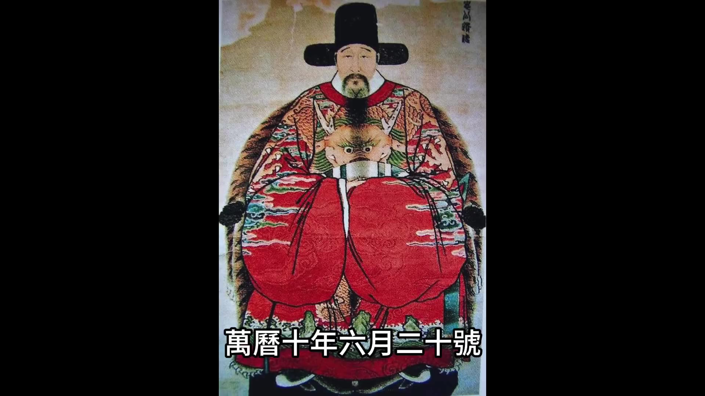
張居正去世。
張居正去世的消息傳到宮中之後
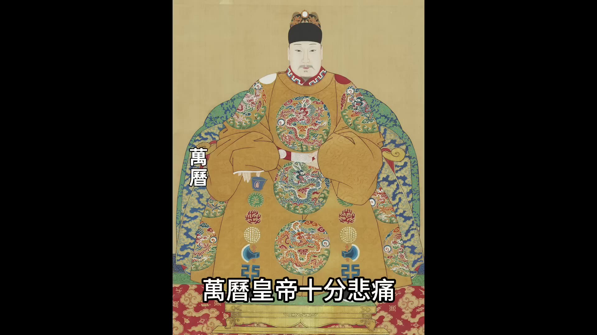
萬曆皇帝十分悲痛，他當即下令所有官員停止上朝一天，然後萬曆派司禮監太監張誠為張居正治喪，並且賞賜了治喪的經費和大量的用品。萬曆給張居正定的謚號是「張文忠公」，「文忠」這兩個字的謚號是給文臣非常高的榮譽。沒想到僅僅過了半年，萬曆皇帝就像變了個人一樣，他開始對張居正大肆的清算。他不僅將張居正的榮譽全部剝奪，甚至對他進行了最殘忍的抄家。在抄家的過程中，張居正的長子被逼自盡，他的十多名家人被活活餓死。
張居正用10年時間改革，他為朝廷做了那麼多貢獻，而且還教導萬曆成人，到底是出於什麼原因讓萬曆對他最敬重的恩師下這樣的狠手？今天我們就來聊聊萬曆和張居正，來看看張居正這個大明朝的第一權臣他死後慘遭清算的真實原因。
萬曆皇帝登基的時候是10歲，還是個孩子，對於一個10歲的孩子來說，上朝理政一切都感到很陌生。
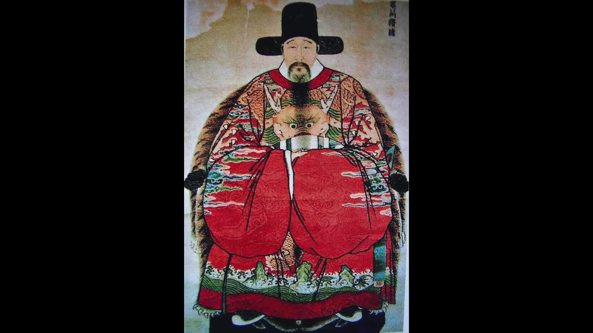
還好有首輔張居正在，在小萬曆的眼裡面，張居正永遠都是智慧的象徵，無論再複雜的事情到張居正手裡都能迎刃而解。萬曆對張居正非常敬重，甚至有些敬畏。自從先皇去世之後，小皇帝的生母李太后就把萬曆的學業托付給張居正，這樣張居正就變成了他有了兩個身份，他既是首輔又是帝師。張居正也很盡責，他盡心盡力地輔佐小皇帝處理朝政，也盡心盡力地輔導小皇帝的學業。小皇帝對張居正的建議從來都是聽從和採納。
張居正執政之後，他首要的任務是改善朝廷的財政情況，他的方案是開源和節流。開源就是在外廷進行改革，節流就是限制一切的開支用度，也包括宮廷的開支，宮廷的開支也要節制。
萬曆皇帝登基之後要過第一個春節的時候，張居正向皇帝提建議，他說為先帝服孝的期限還沒過去，春節宮中就建議不要開設宴席了，元宵節的燈會也不要辦了。小皇帝表示同意，然後他跟張居正說說宮中聖母的膳食也十分簡單，吃的都是齋素，遇到節日也不過是增加一道甜食果品而已。張居正說說如此甚好。
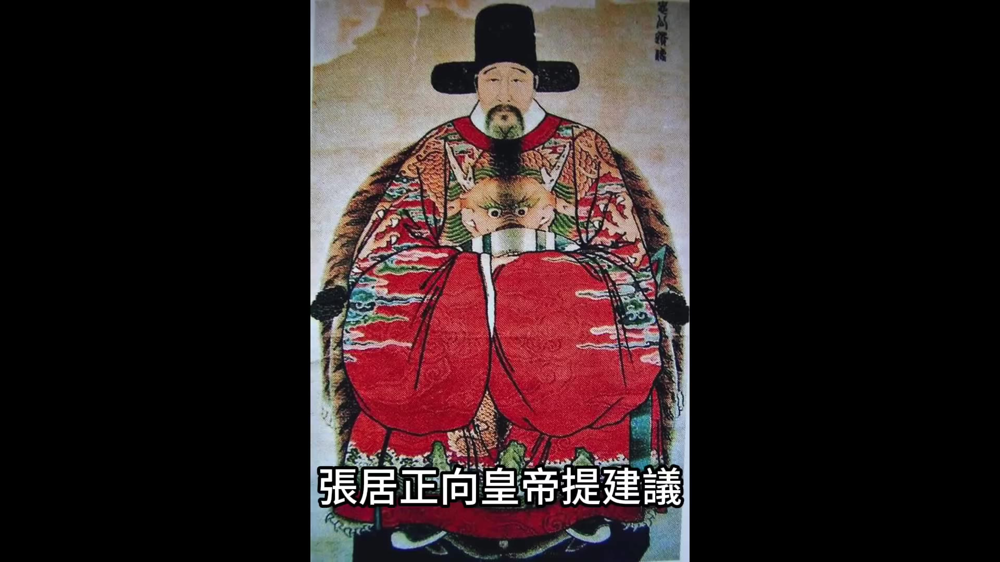
這樣不但能見到陛下追思先帝的孝心，而且節儉是人全的美德，願陛下常常能保持這種心態。這樣萬曆登基之後的第一個春節，宮裡面的宴會就沒舉辦。萬曆登基之後的第二個春節宮里的宴會還是沒辦到。第三個春節小皇帝忍不住問張居正說今年的元宵節煙火能不能恢復，去年前年都已經停辦了，今年能不能不停，他的意思是元宵節的煙火已經停辦了兩年了，追思先帝的孝心也盡到了，今年能不能恢復。小皇帝畢竟還是個孩子，他想盡興地玩一下。
但是張居正卻說說雖然先帝的服孝即將結束，但是接下來皇帝大婚、潞王出閣這些大事都需要花費大量資金。
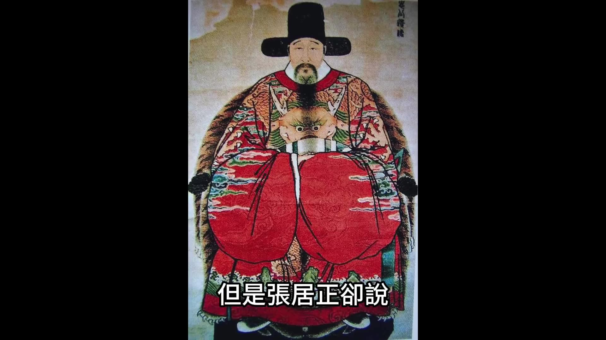
00:05:00
所以現在必須加以節儉以供來年使用，小皇帝只能知趣地說：「如先生所言，完全接受。」張先生的意見決定繼續停止元宵節的所有活動。張居正他就是用這種教導的方式，既教會了小皇帝節儉，同時也達到了他自己要節約宮廷開支的目的。小皇帝對張居正的悉心教導也總是能給予溫暖的回報。萬曆二年五月八號，張居正給小皇帝講課結束，小皇帝得知張先生有些腹痛，他就自己親手調制了碗辣味的面讓張居正吃，他的意思是說熱辣可以治療腹痛。這種少年的真情讓張居正非常感動。又過了10天，小皇帝給張居正寫了一份手諭，手諭寫的是：「聽聞先生父母都健康，我很開心，特賞賜先生的父母大紅蟒衣一襲、銀錢20兩、玉花墜7件、彩衣紗6匹，另外賞賜銀錢20兩是給先生的。」這是小皇帝的親筆手書。張居正收到之後更是感激涕零。透過這些小細節可以看到，在小皇帝的心目中，元輔張先生是不可須臾或缺的，所以他對張先生父母的健康都是關懷備至。但是小皇帝不知道的是，張居正依靠皇帝的信任獲得了絕對的權力，不僅外廷的國家大事需要他來決策，連皇宮內的花銷用度也都得有張居正點頭。朝廷上所有的官員對張居正都呈現出一種極端的畏懼或者爭相諂媚的狀態。張居正有時候自己他也會得意忘形。
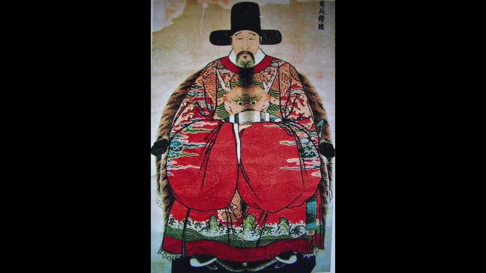
他經常對下屬說：「我非相，乃攝也。」就是說我不僅僅是內閣首輔，而是代皇帝攝政。張居正說這句話的時候，其實就已經膨脹了，他已經僭越了作為臣子的尺寸，這也為他後來被清算埋下了伏筆。
萬曆五年九月十三號，張居正的父親去世。張居正父親去世按照儒家禮法，他應該回家丁憂，丁憂就是辭去官職回家守孝27個月，27個月之後再回到原來的崗位。儒家禮法是以孝治天下，所以不管你是多高的官職也必須遵守丁憂守制。但現在的問題是，張居正的改革已經推進到了關鍵時期，他要是離開崗位27個月這麼長的時間，改革肯定會受到影響，甚至之前的努力都可能付諸流水。所以他要想盡辦法避免丁憂。避免丁憂唯一的一個方法就是皇帝下詔書奪情。奪情是指碰到極端特殊的情況，比如說碰到國家戰爭或者一些特殊情況，皇帝可以下詔書讓大臣不回家守孝，繼續留在崗位上工作。明朝在張居正之前內閣成員也有過幾次奪情的情況，但是次數很少，只有3次，而且每次皇帝奪情之後皇帝和接受奪情的大臣都被文官集團所詬病。最被文官大臣們所推崇的莫過於楊廷和，楊廷和是明孝宗時代的內閣首輔，他父親去世之後他向皇帝請求回家丁憂，皇帝不允許，楊廷和再三請求終於獲得批准。在楊廷和丁憂期間，皇帝給他下御旨「奪情起復」，就是皇帝要求他奪情，大臣被重新啓用。接到皇帝的御旨之後，楊廷和又是再三推辭，楊廷和作為內閣首輔為父母完整的丁憂守孝了27個月，得到了所有官員的贊揚。張居正也是內閣首輔，前面有了楊廷和的例子，他要是想奪情的話，面臨的道德壓力一定會很大。
但是張居正並非常人，他為了做事是可以突破傳統道德的禮法的。
張居正在把他父親去世這個消息彙報給皇帝之前，他先跟馮保商議，讓馮保能夠在皇帝知情的時間給皇帝提出建議，讓皇帝下旨奪情。萬曆皇帝在收到消息之後，果然在第一時間就下了手諭，然後立刻說希望張先生可以奪情。皇帝為了確保奪情成功，他向主管這一事務的吏部下發御旨，皇帝明確表態內閣首輔張居正是他迫切依賴的大臣，不可以離開一天。為了成全他的孝道，准許他在北京的家裡面守孝七七四十九天，此後要照常在內閣辦公。其實張居正奪情這件事，對於皇帝來說，對於張居正自己來說，對於內閣其他成員來說，對於萬曆皇帝來說，他確實十分依賴張居正。從他登基開始，朝中所有的大事都是張居正在辦理，要是讓張居正離開27個月，這是他不能接受的。對於內閣其他成員來說，現在內閣除了張居正之外還有兩位閣員是呂調陽和張四維，他倆認為現在推行新政有巨大的壓力，要是張居正走了，他們恐怕難以承受這種壓力，所以他們也給皇帝上疏希望可以對張居正奪情。所以對於朝廷的最高層來說，張居正奪情是大家都願意看到的現象，但是對於其他的文官大臣來說，可就不是這麼看的了。
00:10:00
其他文官大臣有兩種心態，他們認為倫理綱常大於一切，不要說內閣首輔，就算是一個最普通的小官都應該丁憂守制。張居正作為百官的表率更應該做榜樣，這是一部分文官的心態。還有一部分人則是對張居正推行的新政很不滿，他們希望張居正可以離職，這其實是屬於政治鬥爭。上疏反對張居正奪情的是四個人：一個是翰林院的編修吳中行，一個是翰林院檢討趙用賢，一個是刑部員外郎艾穆，還有一個是刑部主事沈思孝。這四個人彈劾的奏疏一封接著一封，他們的奏疏觀點都是從倫理綱常的角度來反對張居正奪情，他們大概說的意思是說：「陛下您挽留張居正，但是社稷最為看重的莫過於綱常，首輔大臣應該是綱常的表率，如果連綱常都棄之不顧，怎麼能夠安定社稷呢？」這四位大臣的奏疏都是繞過內閣直接送到宮裡面，繞過內閣就是怕張居正攔截。沒想到送進宮裡面之後還是被掌印太監馮保給扣押了。馮保扣押之後他先給張居正看，跟張居正商量對策。
張居正一點都不避諱，他建議對這四個人實行廷杖，用最嚴厲的手段制止這種風氣的蔓延。張居正和馮保商量完之後，他親自票擬了廷杖的建議。馮保把奏疏和票擬拿給皇帝看，並引導皇帝說這些人是在挑撥皇帝和首輔之間的關係，他建議同意內閣的意見對他們進行廷杖。
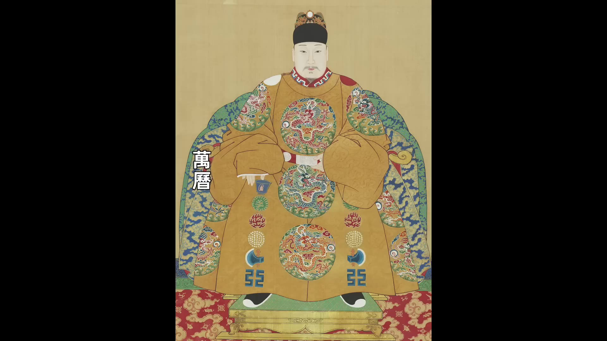
萬曆當年是15歲，還沒有完全親政，他確實是十分依賴張居正。在他看來，奪情留任張先生是他自己做的決定，這些大臣彈劾奪情就是在反對皇帝本人。所以他當即就同意了內閣的票擬，對這四個人進行廷杖。皇帝下旨之後，四位大臣即將面臨被廷杖的命運。廷杖不是小事，如果打的狠一點可能直接會把人打死。很多文官大臣都向張居正求情，希望可以懲罰的輕一點，免除廷杖。但是張居正誰的面子都不給，堅持要廷杖。結果四位大臣兩個被打了60大板，兩個被打了80大板，然後分別發配邊疆。四位大臣被廷杖引起了文官們的集體同情，對他們四個的同情當然就演變為了對張居正的不滿。反對奪情的聲音被壓制下去之後，張居正開始了七七四十九天的居家守孝。
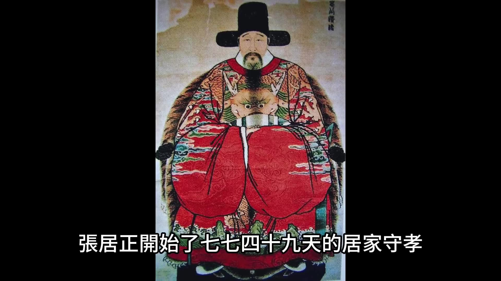
他從來沒間斷過處理公務，公務繁忙的時候，內閣的呂調陽和張四維甚至每天都親自到張府請示。為了接待官員，張居正索性就在喪服裡面穿上官服，接待官員的時候他就脫掉喪服直接穿官服示人。從這點來看，張居正確實是一個不拘泥於普通倫理的政治人物。在這場奪情的風波裡面，毫無疑問張居正是勝利者，反對奪情的人都遭到了嚴懲，但是張居正的形象卻受到了極大的影響。很多人在私底下已經在說他不孝，說他貪戀權位，甚至有人謾罵他是禽獸，是文人的恥辱。這件事情算是萬曆五年政壇上的頭等大事，影響力非常大，後來在清算張居正的時候，這件事也會被翻出來重新定性。
張居正奪情的風波過去之後第三年，萬曆六年二月二十八號。
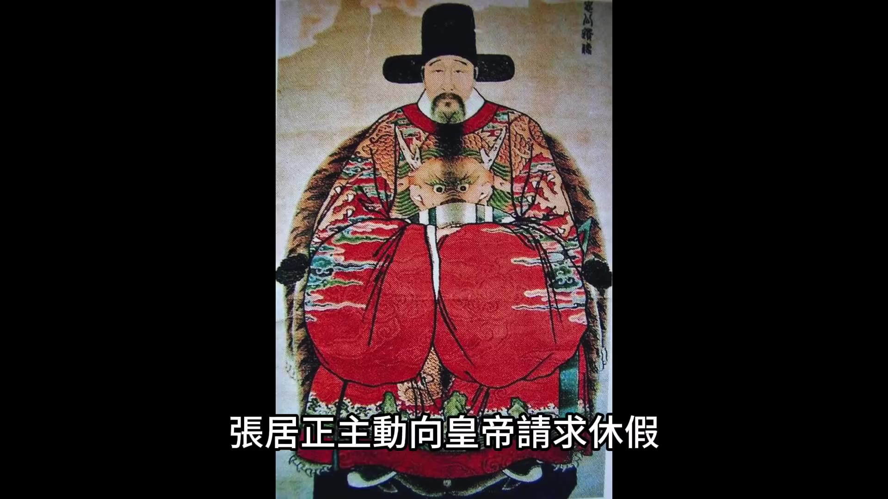
張居正主動向皇帝請求休假，他要回鄉安葬父親。萬曆收到奏疏之後表示不同意，他給出的理由是「張先生豈可朝夕離朕左右」，他說要安葬盡可以派人去，不必自己親自去。如果說張居正之前奪情還有他影響萬曆的可能性，這次他請求回鄉是他自己真實的想法，他是真想回鄉，沒有任何演戲的成分。所以從萬曆說出「張先生豈可朝夕離朕左右」這句話就可以看出來，萬曆是真的離不開張居正。收到皇帝的手諭之後，張居正再次上疏向皇帝請求歸鄉，這次他寫的更加情深意動，他說：「自從臣入仕以來，離別父親已經有19年，父親活著的時候我沒能侍養，死了之後又不能守靈，每每想到此，我不禁五內崩裂。目前得到家書，父親葬期定在四月六日，因此向皇帝請假數月，懇請皇帝批准。」
看到這封奏疏，萬曆被張居正的真情感動了，於是他就批准了張居正兩個月的假期，他還囑咐張居正說安葬完畢之後讓他把母親也接到京城來，在京城奉養母親。張居正向皇帝辭行的時候，皇帝怕張居正耽擱時間，他還特意強調說「國家事情重大，先生不在，朕倚托何人？所以先生一定要在5月中旬回來，千萬不要延遲。」然後就是張居正回鄉，張居正回鄉可以算是衣錦還鄉，他的隨從浩浩蕩蕩，不懂有錦衣衛護送，還有戚繼光派來的火銃兵保鏢，有一個討好張居正的官員。
00:15:00
張居正回鄉時，特意為他定制了一頂規模空前的轎子。這頂轎子簡直就是一座移動的房屋，前半部為起居室，後半部為臥室，旁邊還有走廊。轎子內除了能容納張居正本人外，還能容納兩名童子服侍。如此豪華的轎子需三十二人方能扛起，因此張居正回鄉時坐的不是八抬大轎，而是三十二抬大轎。此行張居正所下榻之處，當地官員皆竭盡所能接待，千方百計搜尋山珍海味以供奉。張居正一路風光無限回到江陵後，將父親葬於太暉山——此地為皇帝特別賞賜的墓地。葬禮完成後，按理應立即返回京城，但當時正值夏季，張居正考慮到母親年邁難耐酷暑，便向皇帝請求推遲歸期，欲待八九月天氣涼爽時再陪母親回京。然而萬曆皇帝堅決不同意，表示日夜期盼張居正早日歸來，並聲稱將派司禮監太監專門迎接其母。張居正無可推辭，只得立即啟程回京。
回京途中，張居正再度受到地方官員超高規格接待。路過襄陽時，分封於此的襄王破例親自迎接，並在襄王府設宴款待。按慣例，朝中大臣見藩王需執臣下之禮，但張居正卻執賓主之禮，且在宴會入席時坐於上座，明顯在襄王心目中地位高於各地藩王，僅次於皇帝。此後張居正路過唐王封地時亦受到相同待遇。後世有人指出張居正在此階段有僭越行為，即指其回鄉時的排場已使藩王居於下首。
萬曆八年，萬曆皇帝年屆十八歲，標誌其已成年可獨立治理朝政。張居正向皇帝提交「歸政乞休」奏疏，意在將朝政權力歸還皇帝，並請求退休。此奏疏情真意切，大致內容為：「自知能力淺薄，未料曾被先帝提拔委以重任。先帝臨終前托付重任，自受命以來日夜戰戰兢兢，唯恐負先帝托付。一晃九年過後，皇帝已成人，而自覺身體不濟，未老先衰，每日思忖大權不宜久居。」此奏疏語氣與諸葛亮《出師表》相似，但張居正並非為出師，而是為辭官。此舉與其平日敢作敢為之風格稍顯矛盾。其奏疏中提及「高位不可以久竊」「大權不可以久居」，顯示其內心充滿擔憂與恐懼。
從張居正致好友朱璉的信中可見其真實心態，信中寫道：「蓋騎虎之勢難下，所以霍光、宇文護終於不免。」此處將自身處境比作「騎虎難下」，並與漢武帝時期權臣霍光、北周宇文護相提並論。霍光、宇文護皆曾攝政，權傾一時，但最終皆死於非命。張居正在權力巔峰之際提及此二人，顯示其已感受到「高處不勝寒」的壓力，內心確實存有退隱之意。張居正致王之誥的信中亦有相似情緒，王之誥為其兒女親家，信中寫道：「每日每夜戰戰兢兢，希望君臣之間有始有終。」其向皇帝所言「惴惴之心無一日不臨於淵谷」，正是其真實心聲的體現。
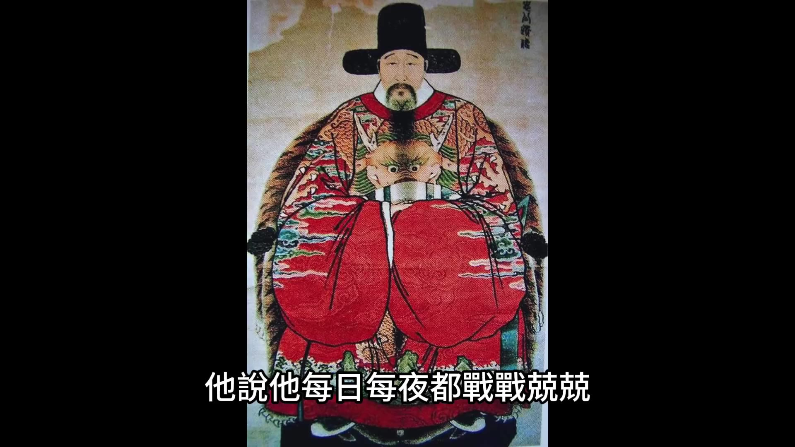
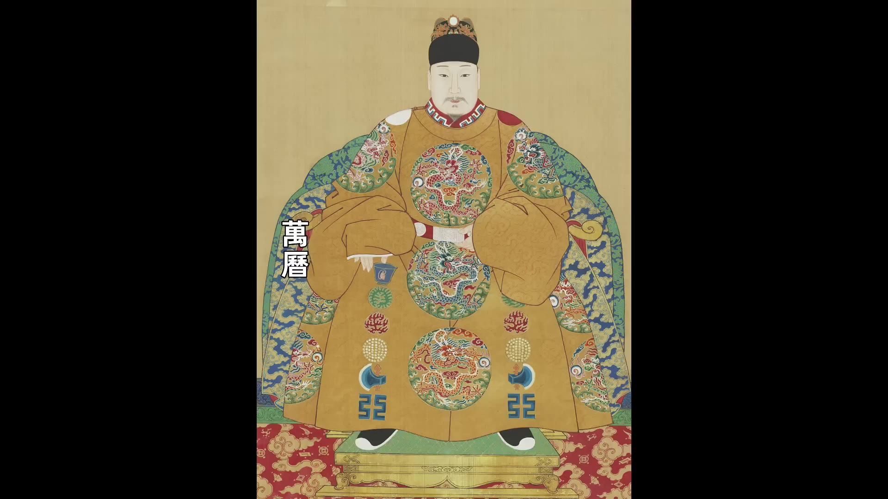
萬曆皇帝突遭張居正奏疏，毫無思想準備，立即駁回其請求，批示稱：「朕正依賴你，你甚至一天都不能離開我身邊，怎麼能突然請求辭職？」兩日後，張居正再次上疏請求辭官。
00:20:00
這次他說的比上一次更加的情深意切。萬曆收到張居正的第二封奏疏之後他有點猶豫了。因為萬曆成年之後他想到過自己要親政，但是這麼多年他養成的習慣是一切都要聽太后和張居正的安排。現在張居正要辭職，這麼大的事他必須要請示太后。太后聽到這個消息之後態度堅決而懇切的輓留張居正，她對萬曆說要等張先生輔佐你到30歲到那時候再做商量。太后這麼說大大出乎萬曆和張居正的預料。一般來說呀皇太后都是希望權臣可以早日歸政，都是希望自己的兒子可以早日親政，而慈聖皇太后居然要張居正輔佐萬曆到30歲，這就讓萬曆有點反感了。
本來對於張居正請辭，一方面呢是這麼多年他都是靠張居正輔佐自己，自己有點離不開張居正，不想讓他走；另外一方面自己已經18歲了，他其實有點想自己親政了。張居正走了他就可以脫離張居正的掌控。但是現在太后這麼說，要讓張居正輔佐自己到30歲，這豈不是說自己的親政遙遙無期，而且一直都得接受張居正的管教。從萬曆的心理來說，張居正對他的管教實在是很嚴格，從小到大萬曆的飲食起居，萬曆稍微有點逾越，張居正就會嚴厲的管教。所以萬曆對於張居正的感情既有依賴也有畏懼。現在張居正請辭，萬曆的心情是矛盾的，但是太后的堅決輓留就激發了萬曆的反感。萬曆對張居正的態度從之前的不可須臾或缺到後來的恨之入骨，很可能就是從這時候發生的心理變化。不過既然太后發話了，而且說的這麼堅決，萬曆也不能不從，張居正就只能留下來了。
兩年之後，萬曆十年六月三十號，張居正去世。從這個時間線來看呀，兩年前張居正請辭的時候他說他自己精力不濟，說他自己未老先衰，應該是他確實對自己的身體情況有所預感。所以從這點也可以側面印證他那次請辭應該是發自真心的想要急流勇退、善始善終。但是事情發展的沒有能如他所願，他還是沒能善終。他死了之後遭到了瘋狂的清算。張居正剛去世的時候，萬曆給予他的待遇還是極高的禮遇，萬曆下令停止上朝一天為張居正哀悼，並且給他定的謚號是「張文忠公」兩個字是非常高的謚號。對於張居正的後事，萬曆派司禮監太監陪同張居正的母親一起護送張居正的靈柩回鄉，護送靈柩的隊伍浩浩蕩蕩非常壯大，他們乘坐70多艘船，雇傭了3,000多名船夫。上次人們看到這麼豪華的排場還是張居正回鄉葬父，沒想到沒過幾年再次看到這麼豪華的排場卻是張居正他自己的靈枢。不過這也是張居正最後的風光了，屬於他的時代已經落幕。
張居正去世之後，首先遭到清算的是司禮監掌印太監馮保。這些年馮保獨攬宮內大權非常高調，他得罪了很多人，但是礙於他和張居正的關係，誰也不敢動他。現在張居正不在了，馮保就失去了外廷的支撐，立刻遭到了清算。同禮監的三把手秉筆太監張鯨和外廷的言官配合策劃了除掉馮保的計劃。外廷的御史李植彈劾馮保，列舉了馮保的十二條罪狀。實際上李植敢於去彈劾馮保並且能夠彈劾成功，還是太監張鯨嗅到了萬曆要清算馮保的意圖。萬曆小時候確實他很依賴馮保這個「大伴」，但是馮保也給他造成了很多的心理陰影。他小時候皇太后對他管理很嚴格，皇太后經常特別囑咐馮保讓馮保對皇帝嚴加管束，馮保聽從皇太后的指示對萬曆管教的也很嚴，也有一些恐懼的心理。而且當萬曆逐漸長大之後，他發現自己很多時候都是被馮保利用了，決策都是受到了馮保的影響。所以他對馮保的心態從親近從依賴轉化成了恐懼和厭惡，甚至都想除掉他。現在他收到御史對馮保的彈劾，他當下就批示馮保欺君蠹國罪惡深重，本當顯戮，念系皇考托付效勞日久，姑且從寬，發南京新房閒住。萬曆的這個懲罰其實很有意思，他先是說馮保罪惡深重本應該處死，然後呢卻沒有處死，而是將他發配到南京新房閒住，這明顯是有讓馮保到南京養老的意思。萬曆還是很念舊情的。
00:25:01
雖然他認為馮保罪惡深重，但是畢竟馮保是從小陪伴他長大的「大伴」，所以他只是把他革職，然後讓他去南京養老。萬曆雖然不忍心處死馮保，但是他很貪財，他對馮保的財產不能放過。萬曆下令查抄馮保的家產，馮保被抄家之後，他的田產和住宅一共變賣了八萬八千兩，其他的財產並不多，沒抄出多少來。萬曆對這個數字顯然很不滿意，因為按照之前御史彈劾馮保的奏疏，馮保貪污的金額至少有大幾十萬兩，甚至有可能超過一百萬兩，但最後抄出來的數字只有不到十萬兩。不知道馮保得到風聲提前運走了，還是抄家的官員中飽私囊了，反正萬曆對於這個金額很不滿意。
在張居正去世之後，朝廷上他的餘威還在，他培植的勢力還在，但張居正改革這麼多年被他打壓的人也很多。張居正死後，朝廷上的官員就分為兩派，一派是擁護張居正的，要繼續張居正改革的路線；另外一派是反對張居正的，要停止改革，甚至要推翻張居正的改革。在反對派看來，既然馮保都能被清算，張居正被清算也不是沒有可能，關鍵還得看萬曆的態度。萬曆對於張居正的態度其實跟他對馮保的態度很相似，他對張居正有很深的感情，同時張居正對他嚴苛的管教讓他也有報復心理。但是更重要的是，萬曆畢竟是皇帝，他小時候不懂，長大之後他就逐漸明白了皇權是不能分享的，皇權和相權是相衝突的。張居正執政這麼多年，他既掌握了外廷的權力，又掌握了皇宮的權力，他獨攬宮內宮外所有的大權，實際上是代替皇帝攝政，就像張居正他自己說的那句話，他說他自己是「我非相，乃攝政也」，這就是對皇權的僭越。萬曆他要想樹立自己的皇權，必須清算張居正以儆效尤，他不能讓這樣的事情再次發生，這是萬曆必須清算張居正的真正原因。而且萬曆他自己親政之後，他也要擺脫張居正對朝廷的影響，現在張居正人雖然死了，但朝廷裡面最重要的崗位都是張居正曾經安排的人，張居正的陰影之下，所以從這點來說，萬曆也要剪除張居正留下的勢力。
萬曆在稍稍的露出自己的態度之後，嗅覺最靈敏的是御史楊四知。楊四知上疏彈劾張居正的十四條罪狀。楊四知彈劾之後，萬曆的回復看起來顯得很寬宏大量，他說的大概意思是：
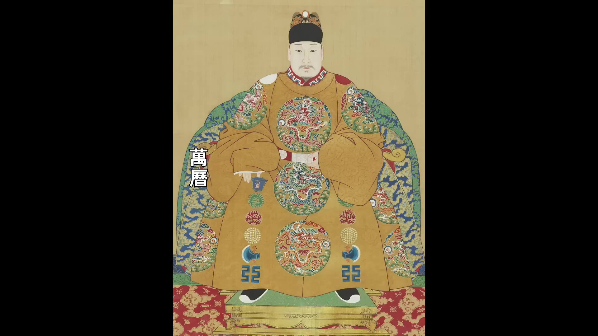
_我這麼寵信張居正，沒想到他也做了這麼多壞事。念在他有十年的輔佐功勞，現在他人已經死了，就不再追究了。_
皇帝口上說不追究，但是他的態度誰都能看出來，他要是真不想追究，就應該把上疏彈劾的人抓起來加以懲戒。在以前的十年之中，朝廷上不是沒有人彈劾張居正，相反朝廷上每過一段時間都有很多人彈劾張居正，但是當這些人彈劾的時候，皇帝都是在第一時間處分彈劾的官員，以表示對張居正的信任。現在皇帝的口風明顯變了，變成了承認張居正有問題，但是念他有功不想追究了。皇帝不想追究，這是他在表示自己的寬宏大度，但是大臣們都嗅出了風向的變化，所以彈劾張居正的奏疏絡繹不絕地遞到了萬曆的手中，朝堂上掀起了一波彈劾張居正的浪潮。首先被清算的就是張居正的嫡系官員，這些年被張居正重點提拔的人，被張居正重用的人，一個一個都被罷官或者處分，然後之前反對張居正的被張居正革職的一個一個都被翻案，張居正的考成法當然也被廢除了。再然後當有人彈劾張居正說張居正坐三十三台大轎享受無比尊貴的禮遇的時候，萬曆更加接受不了了。
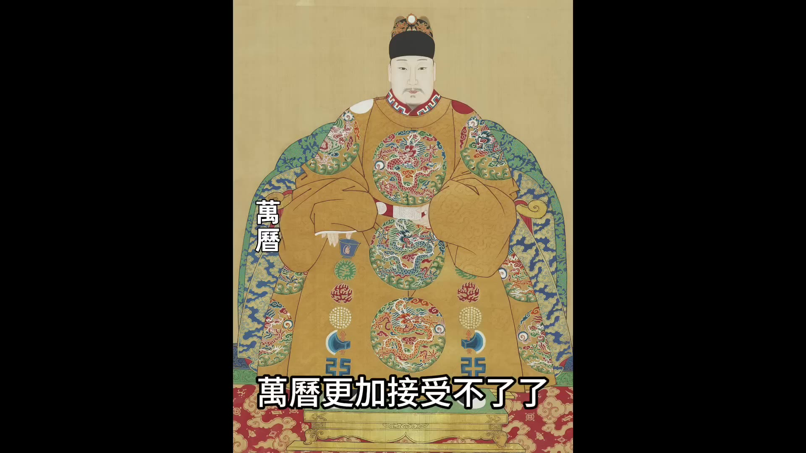
萬曆想到自己作為皇帝經濟上被張居正限制的死死的，他自己連辦個元宵節燈會都不被允許，連平時恕賞賜宮女點銀錢都被限制，張居正他居然說一套做一套，他自己享受著如此的榮華富貴，萬曆實在是氣不過，他把給張居正所有的殊榮都收回來了，包括在張居正生前皇帝的頭銜賜給他的「上柱國」，他「太師」的官銜也包括張居正死後賜給他「文忠」的證號。可見萬曆對張居正的最後一點情面也不講了。最後當有人上疏說張居正在家鄉侵佔了遼王府的土地的時候，萬曆終於找到了查抄張居正家產的把柄。萬曆生性很貪財，他對張居正的家產早就垂涎欲滴了，他認為張居正獨攬大權這麼多年很可能像嚴嵩一樣貪污了巨額財富，但是查抄的結果卻並沒有那麼多，張居正他並沒有無節制的貪污，他江陵的家和北京的家加到一起……
00:30:01
一共被查出來的銀兩只有30多萬兩，這個數字雖然不少，但是顯然也達不到嚴嵩那樣的巨富，跟萬曆期待的二百萬兩也是差距很大。萬曆在派人查抄的時候就下達了一個二百萬兩的查抄指標，負責查抄的官員是刑部侍郎邱橓。邱橓由於查不出來這麼多錢，他就下手特別狠，他把張家人都捆綁起來嚴刑拷打，讓他們承認自己把財產轉移了，逼迫他們偽造口供，一些跟張居正有關係的人指認說把錢轉移到那些人手裡了。然後他想濫用職權從那些人身上榨取金錢，結果張居正的長子張敬修不堪受辱上吊自殺。
因為逼死了張敬修，朝堂上反對的聲音特別大，很多耿直的大臣都上疏為張居正說話，說張居正就算有錯，畢竟他對朝廷有功，希望可以善待他的家人。在大臣們的壓力之下，萬曆才不得不宣佈說不要再難為張居正的家人了。他母親年紀已經大了，流離失所，他讓當地政府給張居正的母親找了一個空房子讓她養老。
萬曆雖然放過了張居正的家人，但是對於張居正的財產絲毫沒有放鬆，他讓太監把張居正的家產能搬到京城的就搬到京城，搬不了的就在當地變賣，所有抄沒的財物都送交內庫。這就是張居正的結局。
最後我們用一句海瑞對張居正的評價來結尾。海瑞和張居正同朝為官，但是他並不是張居正的同黨，海瑞甚至對張居正的政見發出過很多次的非議，但是他對張居正的評價被公認為是非常公正的。海瑞說張居正「功於謀國而拙於謀身」，「功於謀國」是指張居正執政十年通過改革為國家做出了非凡的貢獻，「拙於謀身」是說張居正他在個人修養上在政治退路上有重大的失策，這導致了他死後慘遭清算。
好了，今天的故事就講到這裡。「1921-1945年的專題歷史課程」我開通了，有興趣的朋友歡迎點擊影片下方鏈接瞭解。
00:00:02
大明朝廷的首輔張居正病倒了萬曆皇帝知道之後立刻派御醫到張居正的府上治療對於萬曆來說張居正實在是太重要了
自從自己登基以來無論是朝廷上的大事還是後宮裡面的小事
現在張居正病倒了萬曆十分緊張他除了派最好的御醫之外還派出了自己身邊的太監前去慰問原本以為只是一場小病沒想到一個月過去了張居正居然還是不能起床在這一個月內皇帝不停的派太監前往張居正的府上進行慰問「關懷備至」皇帝對張居正的起到了榜樣作用上行下效朝廷上從六部尚書到一般的官員為了顯示自己對張居正的關心他們紛紛在道觀裡面或者在廟宇裡面設置齋醮為他祈禱有的官員甚至放下本職工作從早到晚的跑寺廟做法事他們做完法事之後把自己的祈禱表章用紅紙包起來送到張居正的家裡請張居正過目以求給張居正留下一個好的印象這股風氣從北京吹到了南京從南京又很快席捲全國全國各地的官員都在做法事都在替張居正祈禱這顯然是一個很不正常的風氣甚至可以說是官場裡面的醜態這些官員一方面是上行下效看到皇帝如此關注張居正的病情大家都跟著學習一方面他們也是在討好張居正指望通過這種手段來博得張居正的好感以後好能飛黃騰達但是全國官員的祈禱也沒能留住張居正的性命萬曆十年六月二十號
張居正去世
張居正去世的消息傳到宮中之後
萬曆皇帝十分悲痛他當即下令所有官員停止上朝一天然後萬曆派司禮監太監張誠為張居正治喪並且賞賜了治喪的經費和大量的用品萬曆給張居正定的謚號是「張文忠公」「文忠」這兩個字的謚號是給文臣非常高的榮譽沒想到僅僅過了半年半年之後萬曆皇帝就像變了個人一樣他開始對張居正大肆的清算他不僅將張居正的榮譽全部剝奪甚至對他進行了最殘忍的抄家在抄家的過程中張居正的長子被逼自盡他的十多名家人被活活餓死
張居正用10年時間改革他為朝廷做了那麼多貢獻而且還教導萬曆成人到底是出於什麼原因讓萬曆對他最敬重的恩師下這樣的狠手今天我們就來聊聊萬曆和張居正來看看張居正這個大明朝的第一權臣他死後慘遭清算的真實原因
萬曆皇帝登基的時候是10歲還是個孩子對於一個10歲的孩子來說上朝理政一切都感到很陌生
還好有首輔張居正在在小萬曆的眼裡面張居正永遠都是智慧的象徵無論再複雜的事情到張居正手裡都能迎刃而解萬曆對張居正非常敬重甚至有些敬畏自從先皇去世之後小皇帝的生母李太后就把萬曆的學業托付給張居正這樣張居正就變成了他有了兩個身份他既是首輔又是帝師張居正也很盡責他盡心盡力地輔佐小皇帝處理朝政也盡心盡力地輔導小皇帝的學業小皇帝對張居正的建議從來都是聽從和採納張居正執政之後他首要的任務是改善朝廷的財政情況他的方案是開源和節流開源就是在外廷進行改革節流就是限制一切的開支用度也包括宮廷的開支宮廷的開支也要節制萬曆皇帝登基之後要過第一個春節的時候張居正向皇帝提建議
他說為先帝服孝的期限還沒過去春節宮中就建議不要開設宴席了元宵節的燈會也不要辦了小皇帝表示同意然後他跟張居正說說宮中聖母的膳食也十分簡單吃的都是齋素遇到節日也不過是增加一道甜食果品而已張居正說說如此甚好
這樣不但能見到陛下追思先帝的孝心而且節儉是人全的美德願陛下常常能保持這種心態這樣萬曆登基之後的第一個春節宮裡面的宴會就沒舉辦萬曆登基之後的第二個春節宮里的宴會還是沒辦到第三個春節小皇帝忍不住問張居正說今年的元宵節煙火能不能恢復去年前年都已經停辦了今年能不能不停他的意思是元宵節的煙火已經停辦了兩年了追思先帝的孝心也盡到了今年能不能恢復小皇帝畢竟還是個孩子他想盡興地玩一下
但是張居正卻說說雖然先帝的服孝即將結束但是接下來皇帝大婚、潞王出閣這些大事都需要花費大量資金
00:05:00
所以現在必須加以節儉以供來年使用小皇帝只能知趣地說說如先生所言完全接受張先生的意見決定繼續停止元宵節的所有活動張居正他就是用這種教導的方式既教會了小皇帝節儉同時也達到了他自己要節約宮廷開支的目的小皇帝對張居正的悉心教導也總是能給予溫暖的回報萬曆二年五月八號張居正給小皇帝講課結束小皇帝得知張先生有些腹痛他就自己親手調制了碗辣味的面讓張居正吃他的意思是說熱辣可以治療腹痛這種少年的真情讓張居正非常感動又過了10天小皇帝給張居正寫了一份手諭手諭寫的是聽聞先生父母都健康我很開心特賞賜先生的父母大紅蟒衣一襲銀錢20兩玉花墜7件彩衣紗6匹另外賞賜銀錢20兩是給先生的這是小皇帝的親筆手書張居正收到之後更是感激涕零透過這些小細節可以看到在小皇帝的心目中元輔張先生是不可須臾或缺的所以他對張先生父母的健康都是關懷備至但是小皇帝不知道的是張居正依靠皇帝的信任獲得了絕對的權力不僅外廷的國家大事需要他來決策連皇宮內的花銷用度也都得有張居正點頭朝廷上所有的官員對張居正都呈現出一種極端的畏懼或者爭相諂媚的狀態張居正有時候自己他也會得意忘形
他經常對下屬說說「我非相，乃攝也』『我非相，乃攝也」就是說我不僅僅是內閣首輔而是代皇帝攝政張居正說這句話的時候其實就已經膨脹了他已經僭越了作為臣子的尺寸這也為他後來被清算埋下了伏筆
萬曆五年九月十三號張居正的父親去世張居正父親去世按照儒家禮法他應該回家丁憂丁憂就是辭去官職回家守孝27個月27個月之後再回到原來的崗位儒家禮法是以孝治天下所以不管你是多高的官職也必須遵守丁憂守制但現在的問題是張居正的改革已經推進到了關鍵時期他要是離開崗位27個月這麼長的時間改革肯定會受到影響甚至之前的努力都可能付諸流水所以他要想盡辦法避免丁憂避免丁憂唯一的一個方法就是皇帝下詔書奪情奪情是指碰到極端特殊的情況比如說碰到國家戰爭或者一些特殊情況皇帝可以下詔書讓大臣不回家守孝繼續留在崗位上工作明朝在張居正之前內閣成員也有過幾次奪情的情況但是次數很少只有3次而且每次皇帝奪情之後皇帝和接受奪情的大臣都被文官集團所詬病最被文官大臣們所推崇的莫過於楊廷和楊廷和是明孝宗時代的內閣首輔他父親去世之後他向皇帝請求回家丁憂皇帝不允許楊廷和再三請求終於獲得批准在楊廷和丁憂期間皇帝給他下御旨『奪情起復」就是皇帝要求他奪情大臣被重新啓用接到皇帝的御旨之後楊廷和又是再三推辭楊廷和作為內閣首輔為父母完整的丁憂守孝了27個月得到了所有官員的贊揚張居正也是內閣首輔前面有了楊廷和的例子他要是想奪情的話面臨的道德壓力一定會很大
但是張居正並非常人他為了做事是可以突破傳統道德的禮法的
張居正在把他父親去世這個消息彙報給皇帝之前他先跟溤保商議讓馮保能夠在皇帝知情的時間給皇帝提出建議讓皇帝下旨奪情萬曆皇帝在收到消息之後果然在第一時間就下了手諭然後立刻說希望張先生可以奪情皇帝為了確保奪情成功他向主管這一事務的吏部下發御旨皇帝明確表態內閣首輔張居正是他迫切依賴的大臣不可以離開一天為了成全他的孝道准許他在北京的家裡面守孝七七四十九天此後要照常在內閣辦公其實張居正奪情這件事對於皇帝來說對於張居正自己來說對於內閣其他成員來說對於萬暦皇帝來說他確實十分依賴張居正從他登基開始朝中所有的大事都是張居正在辦理要是讓張居正離開27個月這是他不能接受的對於內閣其他成員來說現在內閣除了張居正之外還有兩位閣員是呂調陽和張四維他倆認為現在推行新政有巨大的壓力要是張居正走了他們恐怕難以承受這種壓力所以他們也給皇帝上疏希望可以對張居正奪情所以對於朝廷的最高層來說張居正多情是大家都願意看到的現象但是對於其他的文官大臣來說可就不是這麼看的了
00:10:00
其他的文官大臣有兩種心態他們認為倫理綱常大於一切不要說內閣首輔就算是一個最普通的小官都應該丁憂守制張居正作為百官的表率更應該做榜樣這是一部分文官的心態還有一部分人是他們對張居正推行的新政很不滿他們希望張居正可以離職這其實是屬於政治鬥爭上疏反對張居正奪情的是四個人一個是翰林院的編修吳中行個是翰林院檢討趙用賢一個是刑部員外郎艾穆還有一個是刑部主事沈思孝這四個人彈劾的奏疏一封接著一封他們的奏疏的觀點都是從倫理綱常的角度來反對張居正奪情他們大概說的意思是說陛下您輓留張居正但是社穋最為看重的莫過於綱常首輔大臣應該是綱常的表率如果連綱常都棄之不顧怎麼能夠安定社稷呢這四位大臣的奏疏都是繞過內閣直接送到宮裡面繞過內閣就是怕張居正攔截沒想到送進宫裡面之後還是被掌印太監馮保給扣押了馮保扣押之後他先給張居正看跟張居正商量對策
張居定是一點都不避諱他建議對這四個人實行廷杖用最嚴厲的手段制止這種風氣的蔓延張居正和馮保商量完之後他親自票擬了廷杖的建議馮保把奏疏和票擬拿給皇帝看並宜引導皇帝說這些人是在挑撥皇帝和首輔之間的關係他建議同意內閣的意見對他們進行廷杖
萬曆當年是15歲還沒有完全親政他確實是十分依賴張居正在他看來奪情留任張先生是他自己做的決定這些大臣彈劾奪情就是在反對皇帝本人所以他當即就同意了內閣的票擬對這四個人進行廷杖皇帝下旨之後四位大臣即將面臨被廷杖的命運廷杖不是小事如果打的狠一點可能直接會把人打死很多文官大臣都向張居正求情希望可以懲罰的輕一點免除廷杖但是張居正誰的面子都不給堅持要廷杖結果四位大臣兩個被打了60大板兩個被打了80大板然後分別發配邊疆四位大臣被廷杖引起了文官們的集體同情對他們四個的同情當然就演變為了對張居正的不滿反對奪情的聲音被壓制下去之後張居正開始了七七四午九天的居家守孝
他從來沒間斷過處理公務公務繁忙的時候內閣的呂調陽和張四維甚至每天都親自到張府請示為了接待官員張居正索性就在喪服裡面穿上官服接待官員的時候他就脫掉喪服直接穿官服示人從這點來看張居正確實是一個不拘泥於普通倫理的政治人物在這場奪情的風波裡面毫無疑問張居正是勝利者反對奪情的人都遭到了嚴懲但是張居正的形象卻受到了極大的影響很多人在私底下已經在說他不孝說他貪戀權位甚至有人謾罵他是禽獸是文人的恥辱這件事情算是萬曆五年政壇上的頭等大事影響力非常大後來在清算張居正的時候這件事也會被翻出來重新定性
張居正奪情的風波過去之後第三年萬曆六年二月二十八號
張居正主動向皇帝請求休假他要回鄉安葬父親萬曆收到奏疏之後表示不同意他給出的理由是張先生豈可朝夕離朕左右他說要安葬盡可以派人去不必自己親自去如果說張居正之前奪情還有他影響萬曆的可能性在這次他請求回鄉是他自己真實的想法他是真想回鄉他沒有任何演戲的成分所以從萬曆說出張先生豈可朝夕離朕左有這句話就可以看出來萬曆是真的離不開張居正收到皇帝的手諭之後張居正再次上疏向皇帝請求歸鄉這次他寫的更加情深意動他說
自從臣入仕以來離別父親已經有19年父親活著的時候我沒能侍養死了之後又不能守靈每每想到此我不禁五內崩裂目前得到家書父親葬期定在四月六日因此向皇帝請假數月懇請皇帝批准看到這封奏疏萬曆被張居正的真情感動了於是他就批准了張居正兩個月的假期他還囑咐張居正說安葬完畢之後讓他把母親也接到京城來在京城奉養母親張居正向皇帝辭行的時候皇帝怕張居正耽擱時間他還特意強調說國家事情重大先生不在朕倚托何人所以先生一定要在5月中旬回來千萬不要延遲然後就是張居正回鄉張居正回鄉可以算是衣錦還鄉他的隨從浩浩蕩蕩不懂有錦衣衛護送還有戚繼光派來的火銃兵保鏢有一個討好張居正的官員
00:15:00
特意為他定制了一個特別大的轎子這頂轎子簡直就是一座房子轎子的前半部是起居室後半部是臥室旁邊還有走廊轎子裡面除了能坐張居正之外還能坐下兩個童子服侍他這麼豪華的超級大轎子需要三十二個人才能扛起來所以張居正回鄉他坐的不是八抬大轎他坐的是三十二抬大轎這一路張居正下榻的地方當地官員都是使出渾身解數來接待千方百計的搜尋山珍海味來招待張居正張居正一路風光無限回到江陵之後他把父親葬入了太暉山太暉山是皇帝特別賞賜的墓地葬禮完成之後照理來說張居正應該立刻就返回京城但是當時是夏天他考慮到自己的母親年邁難以忍受沿途酷暑的煎熬
張居正就向皇帝請求推遲歸期說他想在八九月份天氣涼爽的季節再陪母親一起回京但是萬曆堅決不同意萬曆說朕日夜都期盼你能早日歸來你怎麼可以延遲你自己立刻就回來你的母親我會派司禮監太監專門迎接既然皇帝都這麼說了張居正就沒有推辭的理由他收到御旨之後只能立刻往回走回京的一路上張居正又是受到了地方官員超高規格的接待路過襄陽的時候分封在這裡的襄王都破例前來迎接而且還在襄王府設宴款待按照慣例來說朝中的大臣無論地位有多高見到藩王的時候都需要執臣下之禮但是張居正卻沒有他見到襄王的時候執的是賓主之禮這點已經很不合規矩了然後在宴會入席的時候張居正坐的居然是上座很顯然在襄王的心目中張居正的地位是高於各地的藩王的他只在皇帝之下此後張居正又路過了唐王的封地他受到的待遇也是如此後來張居正被清算的時候有人說他有僭越的行為指的就是這次張居正回鄉的排場太大連藩王都坐在下首
萬曆八年萬曆皇帝18歲了18歲代表著他已經成年可以獨立治理朝政了張居正向皇帝提交了「歸政乞休』的奏疏『歸政乞休』就是把治理朝政的權力歸還給皇帝祈求自己可以退休這份奏書他寫的情真意切大概的意思是說
他自包能力淺薄沒料到曾被先帝提拔委以重任先帝臨終前委託自包為顧命大臣他自己受命以來每日每夜都是戰戰兢兢唯忍有負先帝托付一晃九年過去了皇帝已經成人而他自己感覺身體不濟巴經未老先衰自己每天都在想大權不可以久居
張居正的這份奏疏讀起來的意味有點諸葛亮的《出師表》但是他不是為了出師而是為了辭官張居正突然上了這麼一封奏疏跟他一貫的敢作敢為的作風有點格格不入他的歸政乞休是真的想辭官把權力還給皇上還是說他只是做做樣子在皇帝成年的時候寫個官樣文章尤其他奏疏裡面有這句話說的是「高位不可以久竊」『大權不可以久居」從這句話可以看出來他這是一種充滿擔憂和恐懼的心態是不是他已經隱約地預感到了什麼我們看張居正在這段時間給他的好友朱璉寫的一封信他給朱璉寫的信裡面有一句話說的是說他自己「蓋騎虎之勢難下」「所以霍光宇文護終於不免」這句話透露出了張居正內心的真實想法他把現在他自己的處境說成是騎虎難下之勢把自己跟霍光跟宇文護相類比霍光是漢武帝時期的權臣
這兩個人都曾經攝政都是在攝政的時候權傾一時但是最後的下場都是死得很慘張居正現在正處於權力的巔峰狀態皇太后都對他非常寵信皇帝他能在這個時候想到霍光和宇文護說明他可能已經自己感覺到了高處不勝寒他是真的有恐懼和擔憂在想要激流勇退了張居正而寫的另外一封信是他寫給王之誥的他在信裡面有差不多的心情王之誥是張居正的兒女親家是他很親近的人他說他每日每夜都戰戰兢兢
希望君臣之間能夠有始有終所以他向皇帝所說的『惴惴之心無一日不臨於淵谷」完全是他自己的真情流露從這些都能反映出來張居正是真的有所恐懼真的想要辭官
萬曆突然收到張居正的奏疏一點思想準備都沒有他毫不猶豫的就駁回了張居正的請求他給張居正的批示是朕正是依賴你的時候你甚至一天都不能離開我身邊你怎麼可以突然請求辭職呢兩天之後張居正再次上疏請求辭官
00:20:00
這次他說的比上一次更加的情深意切萬曆收到張居正的第二封奏疏之後他有點猶豫了因為萬曆成年之後他想到過自己要親政但是這麼多年他養成的習慣是一切都要聽太后和張居正的安排現在張居正要辭職這麼大的事他必須要請示太后太后聽到這個消息之後態度堅決而懇切的輓留張居正她對萬曆說說要等張先生輔佐你到30歲到那時候再做商量太后這麼說大大出乎萬曆和張居正的預料一般來說呀皇太后都是希望權臣可以早日歸政都是希望自己的兒子可以早日親政而慈聖皇太后居然要張居正輔佐萬曆到30歲這就讓萬曆有點反感了本來對於張居正請辭一方面呢是這麼多年他都是靠張居正輔佐自己自己有點離不開張居正不想讓他走另外一方面自己已經18歲了他其實有點想自己親政了張居正走了他就可以脫離張居正的掌控但是現在太后這麼說要讓張居正輔佐自己到30歲這豈不是說自己的親政遙遙無期而且一直都得接受張居正的管教從萬曆的心理來說張居正對他的管教實在是很嚴格從小到大萬曆的飲食起居萬曆稍微有點逾越張居正就會嚴厲的管教所以萬曆對於張居正的感情既有依賴也有畏懼現在張居正請辭萬曆的心情是矛盾的但是太后的堅決輓留就激發了萬曆的反感萬曆對張居正的態度從之前的不可須臾或缺到後來的恨之入骨
很可能就是從這時候發生的心理變化不過既然太后發話了而且說的這麼堅決萬曆也不能不從張居正就只能留下來了
兩年之後萬曆十年六月三十號張居正去世從這個時間線來看呀兩年前張居正請辭的時候他說他自己精力不濟說他自己未老先衰應該是他確實對自己的身體情況有所預感所以從這點也可以側面印證他那次請辭應該是發自真心的想要急流勇退善始善終但是事情發展的沒有能如他所願他還是沒能善終他死了之後遭到了瘋狂的清算張居正剛去世的時候萬曆給予他的待遇還是極高的禮遇萬曆下令停止上朝一天為張居正哀悼並且給他定的謚號是「張文忠公」兩個字是非常高的謚號對於張居正的後事萬曆派司禮監太監陪同張居正的母親一起護送張居正的靈柩回鄉護送靈柩的隊伍浩浩蕩蕩非常壯大他們乘坐70多艘船雇傭了3,000多名船夫上次人們看到這麼豪華的排場還是張居正回鄉葬父沒想到沒過幾年再次看到這麼豪華的排場卻是張居正他自己的靈枢不過這也是張居正最後的風光了屬於他的時代已經落幕張居正去世之後首先遭到清算的是司禮監掌印太監馮保這些年馮保獨攬宮內大權非常高調他得罪了很多人但是礙於他和張居正的關係誰也不敢動他現在張居正不在了馮保就失去了外廷的支撐立刻遭到了清算同禮監的三把手秉筆太監張鯨和外廷的言官配合策劃了除掉馮保的計劃外廷的御史李植彈劾馮保列舉了馮保的十二條罪狀
實際上李植敢於去彈劾馮保並且能夠彈劾成功還是太監張鯨嗅到了萬曆根要清算馮保的意圖萬曆小時候確實他很依賴馮保這個「大伴」但是馮保也給他造成了很多的心理陰影他小時候皇太后對他管理很嚴格皇太后經常特別囑咐馮保讓馮保對皇帝嚴加管束馮保聽從皇太后的指示對萬曆管教的也很嚴也有一些恐懼的心理而且當萬曆逐漸長大之後他發現自己很多時候都是被馮保利用了決策都是受到了馮保的影響所以他對馮保的心態從親近從依賴轉化成了恐懼和厭惡甚至都想除掉他現在他收到御史對馮保的彈劾他當下就批示馮保欺君蠹國罪惡深重本當顯戮念系皇考托付效勞日久姑且從寬發南京新房閒住萬曆的這個懲罰其實很有意思他先是說馮保罪惡深重本應該處死然後呢卻沒有處死而是將他發配到南京新房閒住這明顯是有讓馮保到南京養老的意思萬曆還是很念舊情的
00:25:01
雖然他認為馮保罪惡深重但是畢竟馮保是從小陪伴他長大的「大伴」所以他只是把他革職然後讓他去南京養老萬曆雖然不忍心處死馮保但是他很貪財他對馮保的財產不能放過萬曆下令查抄馮保的家產馮保被抄家之後他的田產和住宅一共變賣了八萬八千兩其他的財產並不多沒抄出多少來萬曆對這個數字顯然很不滿意因為按照之前御史彈劾馮保的奏疏馮保貪活的金額至少有大幾十萬兩甚至有可能超過一百萬兩但最後抄出來的數字只有不到十萬兩不知道馮保得到風聲提前運走了還是抄家的官員中飽私囊了反正萬曆對於這個金額很不滿意
在張居正去世之後朝廷上他的余威還在他培植的勢力還在但張居正改革這麼多年被他打壓的人也很多張居正死後朝廷上的官員就分為兩派一派是擁護張居正的要繼續張居正改革的路線另外一派是反對張居正的要停止改革甚至要推翻張居正的改革在反對派看來既然馮保都能被清算那張居正被清算也不是沒有可能關鍵還得看萬曆的態度萬曆對於張居正的態度其實跟他對馮保的態度很相似他對張居正有很深的感情同時張居正對他嚴苛的管教讓他也有報復心理但是更重要的是萬曆畢竟是皇帝他小時候不懂長大之後他就逐漸明白了皇權是不能分享的皇權和相權是相衝突的張居正執政這麼多年他既掌握了外廷的權力又掌握了皇宮的權力他獨攬宮內宮外所有的大權實際上是代替皇帝攝政就像張居正他自己說的那句話他說他自己是『我非相，乃攝政也」這就是對皇權的僭越萬曆他要想樹立自己的皇權必須清算張居正以儆效尤他不能讓這樣的事情再次發生這是萬曆必須清算張居正的真正原因而且萬曆他自己親政之後他也要擺脫張居正對朝廷的影響現在張居正人雖然死了但朝廷裡面最重要的崗位都是張居正曾經安排的人張居正的陰影之下所以從這點來說萬曆也要剪除張居正留下的勢力萬曆在稍稍的露出自己的態度之後嗅覺最靈敏的是御史楊四知
楊四知上疏彈劾張居正的十四條罪狀楊四知彈劾之後萬曆的回復看起來顯得很寬宏大量他說的大概意思是
我這麼寵信張居正沒想到他也做了這麼多壞事
念在他有十年的輔佐功勞現在他人已經死了就不再追究了皇帝口上說不追究但是他的態度誰都能看出來他要是真不想追究就應該把上疏彈劾的人抓起來加以懲戒在以前的十年之中朝廷上不是沒有人彈劾張居正相反朝廷上每過一段時間都有很多人彈劾張居正但是當這些人彈劾的時候皇帝都是在第一時間處分彈劾的官員以表示對張居正的信任現在皇帝的口風明顯變了變成了承認張居正有問題但是念他有功不想追究了皇帝不想追究這是他在表示自己的寬宏大度但是大臣們都嗅出了風向的變化所以彈劾張居正的奏疏絡繹不絕地遞到了萬曆的手中朝堂上掀起了一波彈劾張居正的浪潮首先被清算的就是張居正的嫡系官員這些年被張居正重點提拔的人被張居正重用的人一個一個都被罷官或者處分然後之前反對張居正的被張居正革職的一個一個都被翻案張居正的考成法當然也被廢除了再然後當有人彈劾張居正說張居正坐三十三台大轎享受無比尊貴的禮遇的時候萬曆更加接受不了了
萬曆想到自己作為皇帝經濟上被張居正限制的死死的他自己連辦個元宵節燈會都不被允許連平時恕賞賜宮女點銀錢都被限制張居正他居然說一套做一套他自己享受著如此的榮華富貴萬曆實在是氣不過他把給張居正所有的殊榮都收回來了包括在張居正生前皇帝的頭銜賜給他的「上柱國』他「太師」的官銜也包括張居正死後賜給他「文忠』的證號可見萬曆對張居正的最後一點情面也不講了最後當有人上疏說張居正在家鄉侵佔了遼王府的土地的時候萬曆終於找到了查抄張居正家產的把柄萬曆生性很貪財他對張居正的家產早就垂涎欲滴了他認為張居正獨攬大權這麼多年很可能像嚴嵩一樣貪污了巨額財富但是查抄的結果卻並沒有那麼多張居正他並沒有無節制的貪污他江陵的家和北京的家加到一起
00:30:01
一共被查出來的銀兩只有30多萬兩這個數字雖然不少但是顯然也達不到嚴嵩那樣的巨富跟萬曆期待的二百萬兩也是差距很大萬曆在派人查抄的時候就下達了一個二百萬兩的查抄指標負貴查抄的官員是刑部侍郎邱橓邱橓由於查不出來這麼多錢他就下手特別狠他把張家人都捆綁起來嚴刑拷打讓他們承認自己把財產轉移了逼迫他們偽造口供一些跟張居正有關係的人指認說把錢轉移到那些人手裡了然後他想濫用職權從那些人身上榨取金錢結果張居正的長子張敬修不堪受辱上吊自殺因為逼死了張敬修朝堂上反對的聲音特別大很多耿直的大臣都上疏為張居正說話說張居正就算有錯畢竟他對朝廷有功希望可以善待他的家人在大臣們的壓力之下萬曆才不得不宣佈說不要再難為張居正的家人了他母親年紀已經大了流離失所他讓當地政府給張居正的母親找了一個空房子讓她養老萬曆雖然放過了張居正的家人但是對於張居正的財產絲毫沒有放鬆他讓太監把張居正的家產能搬到京城的就搬到京城搬不了的就在當地變賣所有抄沒的財物都送交內庫這就是張居正的結局最後我們用一句海瑞對張居正的評價來結尾海瑞和張居正同朝為官但是他並不是張居正的同黨海瑞甚至對張居正的政見發出過很多次的非議但是他對張居正的評價被公認為是非常公正的
海瑞說張居正功於謀國而拙於謀身功於謀國是指張居正執政十年通過改革為國家做出了非凡的貢獻拙於謀身是說張居正他在個人修養上在政治退路上有重大的失策這導致了他死後慘遭清算好了今天的故事就講到這裡「1921-1945年的專題歷史課程」我開通了有興趣的朋友歡迎點擊影片下方鏈接瞭解
已核實
張居正卒於萬曆十年六月二十日 — 明實錄・神宗（萬曆）卷一百二十五・萬曆十年六月20日（段61168）：「丙午，太師兼太子太師吏部尚書中極殿大學士張居正卒，上震悼，輟朝一日，遣司禮監太監張誠經紀其喪」——確認張居正逝世的確切日期為萬曆十年六月二十日，與影片所述「萬曆十年六月二十號」完全一致，且確認萬曆帝在其死訊傳來時的初期反應是「震悼輟朝」（哀悼並輟朝一日）——與影片描述清算之前朝廷尚給予身後哀榮的敘事相符。✅
未能獨立核實
- 抄家過程中張居正家人「十多名被活活餓死」的確切人數與出處（本次搜尋未能在中研院漢籍資料庫中定位到明確對應段落，這是明史・張居正傳中常被引用的細節，惟本次檢索詞選擇未能命中）- 馮保被抄家的具體查抄財產數字- 萬曆十年六月三十號（張居正卒後十日）的具體朝廷動作- 抄家官員是否有中飽私囊情事的具體記載